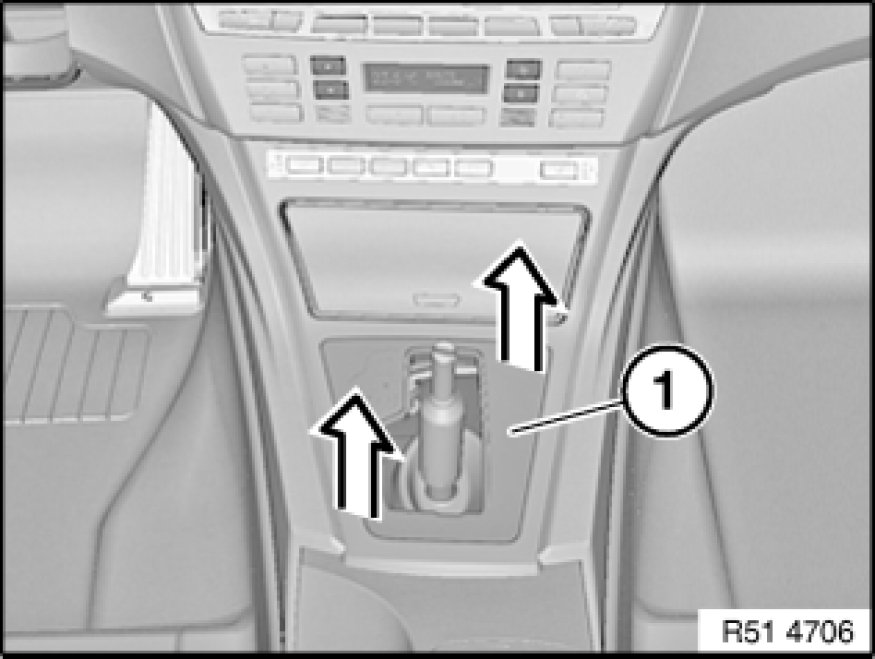
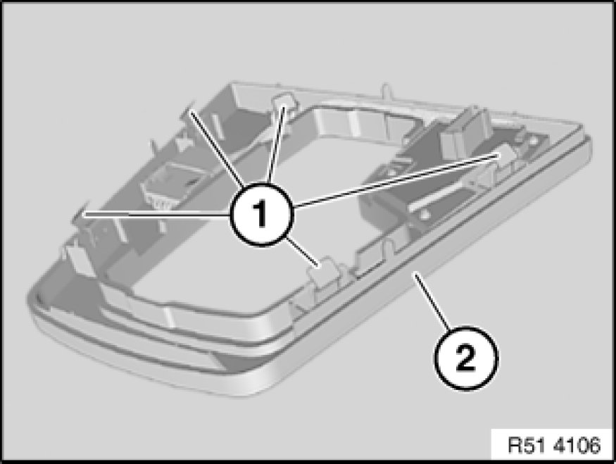

51 16 210 Removing and Installing/Replacing Trim For Preselector Lever
51 16 210 - Removing and installing/replacing trim for preselector lever

Necessary preliminary tasks:
- Apply parking brake
- Move selector lever into N position
- Remove gaiter 25 16 065 - Replacing gaiter (selector lever cover) for shift tower for shift block

Unclip trim for preselector lever (1) towards top.
Disconnect associated plug connections and remove trim for preselector lever (1).

Installation:
Retainers (1) must not be damaged or missing.
Make sure retainers (1) are correctly seated in appropriate mounts of trim for preselector lever (2).